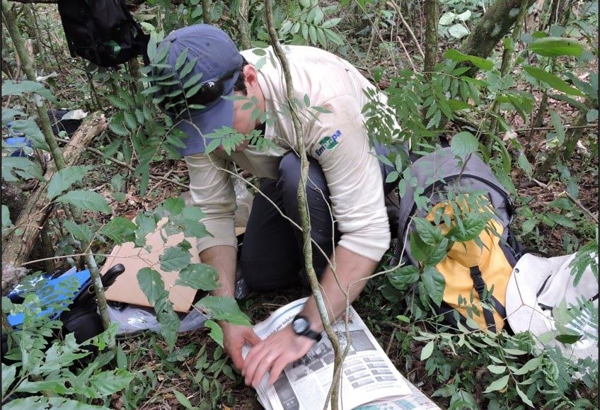
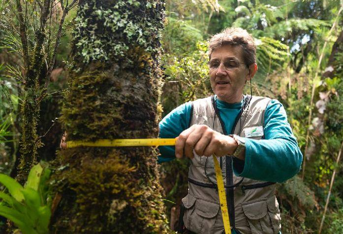
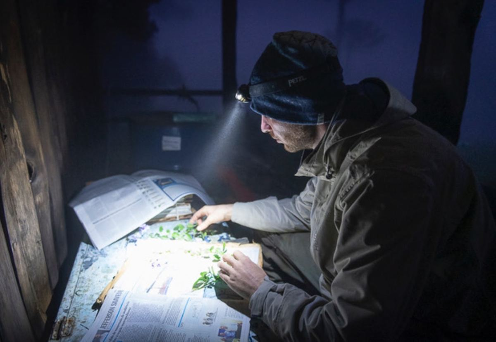
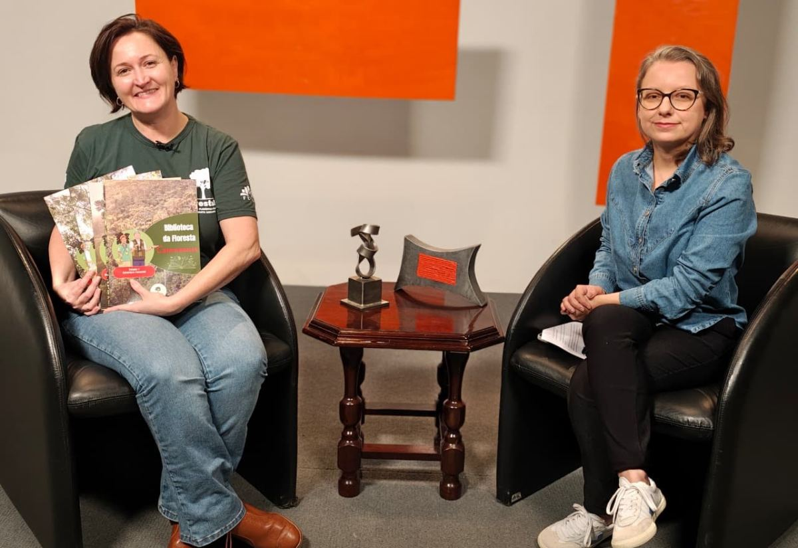
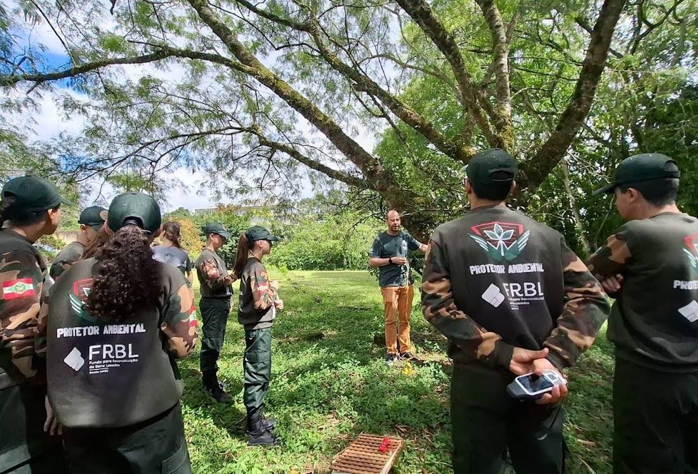
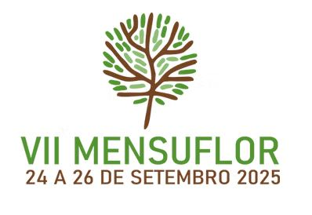
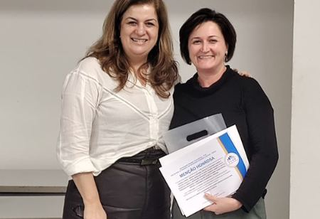
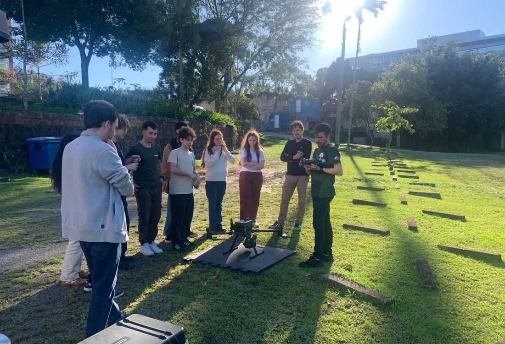
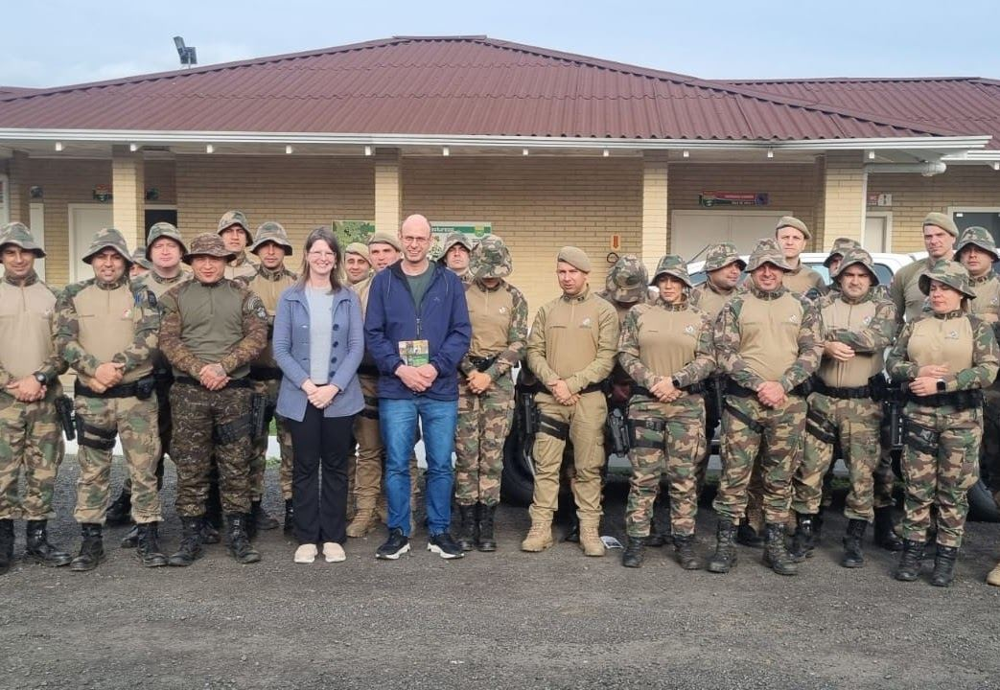

Últimas Notícias
4° Seminário do FlorestaSC divulga os resultados das últimas atividades de pesquisa
22 de Julho de 2026
O 4º Seminário do FlorestaSC ocorreu na última quinta-feira (16/07/2026), trazendo muitas informações e resultados das últimas atividades de pesquisa do FlorestaSC, com foco na aplicação de novas tecnologias. O evento foi realizado no Campus da UNESC, Auditório Edson Rodrigues (UNESC), em Criciúma - SC, podendo ser acompanhado de forma presencial ou online.... Leia mais
E se um aplicativo proporcionasse a sensação de estar dentro do tronco oco de uma araucária centenária? E se você pudesse interagir com uma árvore em 3D no seu celular? E que tal um desafio tipo “Pokémon GO” na floresta? Essas e outras experiências interativas são possíveis através dos três aplicativos desenvolvidos a partir de uma parceria entre o FlorestaSC e o LDDT - Laboratório de Desenvolvimento e Transferência de Tecnologia da FURB... Leia mais
Notícias Anteriores

Como saber, de verdade, quantas plantas vivem nas florestas de Santa Catarina? Essa pergunta, que parece simples, é um dos maiores desafios de quem estuda a biodiversidade. Um novo artigo do programa FlorestaSC, publicado na revista científica Forest Ecology and Management, mostra que a resposta... Leia mais
As atividades de campos de 2025 foram finalizadas e com isso, mais uma etapa da remedição do 3º ciclo de medição foi cumprida. A conclusão de mais uma etapa foi possível graças ao empenho de uma equipe que trabalhou incansavelmente, encarando as adversidades inerentes ao trabalho de campo... Leia mais

O coordenador do FlorestaSC, Prof. Alexander Vibrans, é considerado um dos cientistas mais influentes do Brasil, segundo um ranking elaborado pela Agência Bori e plataforma Overton, que mapeiam a interface entre ciência e políticas públicas. O pesquisador é o único pesquisador de Santa Catarina que figura entre... Leia mais

O programa FlorestaSC, que há 18 anos monitora sistematicamente as florestas de Santa Catarina, acaba de publicar novos resultados na revista Forest Ecology and Management, no artigo “FlorestaSC: A double-up approach to improve biodiversity monitoring... Leia mais

A Profa. Daniela Tomio, coordenadora da Biblioteca da Floresta Catarinense foi entrevistada no Programa FURB Pesquisa. Na entrevista a Profa Daniela destacou a potencialidade de uso desta coleção no ensino sobre as florestas catarinenses na Educação Básica... Leia mais

O mês de outubro foi marcado com algumas atividades realizadas pelo FlorestaSC com turmas do Programa Protetor Ambiental - PROA Adolescentes. O PROA é uma iniciativa da Polícia Militar Ambiental com foco na educação informal de adolescentes de 12 a 14 anos, visando a conscientização... Leia mais

O pesquisador Laio Oliveira participou e apresentou um estudo científico no VII MENSUFLOR Encontro Brasileiro de Mensuração Florestal. O evento ocorreu em Lavras - MG | Universidade Federal de Lavras, entre 24 e 27 de setembro de 2025. O Mensuflor é um evento bienal que reúne pesquisadores e profissionais das áreas de... Leia mais

O trabalho “Biblioteca da Floresta Catarinense: divulgando ciência na escola para educação florestal” foi premiado durante a solenidade de encerramento da 19ª edição da Mostra Integrada de Ensino, Pesquisa, Extensão e Cultura (Mipe) da Universidade Regional de Blumenau (FURB)... Leia mais

No dia 09 de setembro de 2025, foi realizado o minicurso “Coleta de dados de atributos florestais com sensores montados em drone: aplicações e perspectivas.”, ministrado pelo pesquisador Murilo Schramm do FlorestaSC. O minicurso fez parte da programação... Leia mais

Mais uma atividade em parceria com a Polícia Militar Ambiental de Santa Catarina realizada com sucesso! No dia 03 de setembro de 2025 estivemos em Lages para uma palestra sobre as ações, resultados e bases de dados do projeto. Também se abordou as aplicações desenvolvidas pelo... Leia mais
Guilherme Gritzz, doutorando da Universidade de São Paulo, e seus coautores publicaram um estudo na revista Oryx avaliando o risco de extinção de mais de 500 espécies de árvores em Santa Catarina, Brasil. O artigo foi intitulado como Assessing the extinction risk of tree species in the subtropical... Leia mais
Ótimas experiências e até prêmios, o 75º Congresso Nacional de Botânica (CNBot) rendeu! O evento ocorreu em Parnaíba (PI), entre 09 e 16 de agosto de 2025. Participaram do evento os professores e pesquisadores do FlorestaSC/Herbário FURB: prof. Alexander Vibrans, prof. André de Gasper, Anderson Kassner, Gabriel Yan e Giesta Oliveira... Leia mais
O FlorestaSC promoveu algumas ações que integraram o calendário do Junho Verde de Blumenau, coordenado pela Diretoria de Educação Ambiental e Bem-estar Animal da Semmas. O Junho Verde é um mês dedicado à conscientização ambiental, com ações realizadas por instituições públicas, privadas e do terceiro setor, que visam... Leia mais
Um grande feito foi realizado pelo FlorestaSC no que tange à divulgação científica sobre as florestas catarinenses. Na noite do dia 13 de junho (sexta-feira), o FlorestaSC lançou a nova coleção Biblioteca da Floresta Catarinense, com fomento do CNPq e organizada pela professora Daniela Tomio... Leia mais
A equipe de sensoriamento remoto e geoprocessamento do FlorestaSC recebeu reforços! O coordenador do FlorestaSC, professor Alexander Vibrans, deu as boas-vindas ao Eng. Florestal Luiz Carlos da Silveira e aos acadêmicos de Engenharia Florestal, Gabriel Lessa e de Computação, Laura Isabela Seibt. Os três novos... Leia mais
No dia 24 de abril de 2025, recebemos a visita da turma do Técnico em Meio Ambiente do IFSC/Florianópolis, coordenada pelo professor Rafael Schmitz. Na parte da manhã, os alunos visitaram o laboratório do FlorestaSC, localizado no campus 2 da FURB. Os alunos puderam realizar uma prática... Leia mais
A etapa de campo de 2025 já começou! Está prevista a remedição de 60 unidades amostrais neste ano, para dar continuidade ao 3º Ciclo de Medições e avaliar a dinâmica da floresta. Fazem parte da equipe deste ano: o eng. florestal Leander Bini (chefe de equipe), os biólogos Anderson Kassner Filho (botânico) e Daniel Parma... Leia mais
Entre os dias 05/02/2025 e 07/02/2025, ocorreu uma visita exploratória ao Parque Ecológico Floresta René Frey (Fraiburgo/SC) para investigar as potencialidades do parque como instrumento de educação florestal. Participaram da ação, os pesquisadores... Leia mais
Os pesquisadores do programa FlorestaSC/FURB, MSc. Adilson Luiz Nicoletti e Prof. Dr. Jonathan Gil Müller, do Programa de Pós-Graduação em Engenharia Ambiental (PPGEA), visitaram o Centro de Previsão de Tempo e Estudos Climáticos (CPTEC) do INPE... Leia mais
O Dr. Daniel A. da Silva, pesquisador do FlorestaSC, participou do XXI Simpósio Internacional Selper: Além do dossel – Tecnologias e Aplicações de Sensoriamento Remoto, realizado em Belém do Pará, de 4 a 8 de nov. de 2024. O evento teve como objetivo... Leia mais
Pesquisadores do FlorestaSC conquistaram a aprovação de três propostas submetidas à Chamada Pública FAPESC Nº 12/2023. A duração dos projetos aprovados será de 27 meses e o recurso obtido possibilitará a captação de imagens com drone, ampliação da... Leia mais
Neste mês de fevereiro foi iniciada uma nova etapa de medição de campo, dando continuidade ao 3º ciclo de medições. Isso significa que temos um conjunto de parcelas que estão sendo medidas pela 3º vez, o que possibilita conhecer diversos aspectos da dinâmica da floresta... Leia mais
Saiu uma importante publicação sobre o mapeamento da Restinga realizado pelo FlorestaSC para o nosso estado. O artigo intitulado Mapeamento das Áreas Potenciais (originais) e Remanescentes de Restinga: uma proposta metodológica para Santa Catarina, Brasil foi publicado... Leia mais
Os pesquisadores do FlorestaSC, André Luís de Gasper e Alexander Vibrans, colaboraram em um estudo publicado pela revista Science que aponta que a maioria das espécies de árvores da Mata Atlântica estão ameaçadas de extinção... Leia mais
No dia 22 de novembro de 2023, a equipe do FlorestaSC junto com a Polícia Militar Ambiental (PMA), participou do Summit Vale Europeu, para realizar o lançamento do produto Forest Data Link. O Forest Data Link consiste em um conjunto de ferramentas propostos pelo FlorestaSC, em apoio às... Leia mais
Nos dias 6 e 7 de novembro, o coordenador do FlorestaSC participou a convite do Serviço Florestal Brasileiro (SFB/MMA) do “Seminário Nacional de Alinhamento Estratégico do Inventário Florestal Nacional do Brasil” realizado em Brasília. O objetivo do seminário foi de fornecer insumos estratégicos e técnicos para... Leia mais
O avanço da tecnologia tem possibilitado inovações importantes em várias áreas, sobretudo da pesquisa florestal. A equipe do FlorestaSC procura estar sempre antenada nas tendências tecnológicas e tem buscado modernizar a coleta e o processamento... Leia mais
Em uma ação inédita, o FlorestaSC iniciou a obtenção de dados com drone nas parcelas permanentes. Com o drone, são adquiridas imagens multiespectrais que serão processadas para extrair variáveis da estrutura da floresta e identificação das espécies. A atividade está... Leia mais
Ocorreu em Florianópolis (SC), entre os dias 02 e 05 de abril, o XX Simpósio Brasileiro de Sensoriamento Remoto - SBSR, organizado pelo INPE e Selper Brasil. O Simpósio é realizado a cada dois anos, mas por conta da pandemia do coronavírus, o evento não ocorria desde 2019. O SBSR... Leia mais
A equipe do IFFSC resolveu atualizar a identidade visual do inventário catarinense para facilitar a comunicação com diferentes públicos. As mudanças de nome e logomarca foram desenvolvidas com ajuda da equipe da “Repúblika”, agência experimental de publicidade do curso de Publicidade e Marketing da FURB... Leia mais
Em 23 de novembro foi realizado o 3° Seminário do IFFSC, com objetivo de socializar os resultados das medições em 303 Unidades Amostrais do 2° Ciclo do IFFSC, realizadas entre 2014 e 2019. No evento realizado no Auditório Tito Sena, da UDES... Leia mais
No dia 29 de agosto, a nova equipe do IFFSC reuniu-se pela primeira vez planejando as ações da nova fase do Inventário Florestal Catarinense que será desenvolvida entre 2022 e 2027. Trata-se do 3º ciclo de medições de 220 Unidades Amostrais... Leia mais
O estudo publicado na revista Forest Ecology and Management é resultado de 15 anos de trabalho das equipes do IFFSC. Consideramos os resultados obtidos, uma peça chave para o entendimento da dinâmica das florestas no nosso estado, uma vez que... Leia mais
Dados do IFFSC compuseram um estudo global de grande relevância ecológica, que foi publicado nos Anais da Academia Americana de Ciências (PNAS) e é resultante de três anos de investigação de um grupo de pesquisadores organizado na GFBI... Leia mais
O estudo de autoria do doutorando Oliver Wilson (Universidade de Reading, Inglaterra) e integrantes da equipe do IFFSC, estabeleceu uma inédita linha do tempo das mudanças florísticas ocorridas, nos últimos 21.000 anos na Floresta Atlântica do Sul do Brasil... Leia mais
Integrantes do IFFSC publicaram um estudo no qual são apontadas novas áreas com potencial para conservação de florestas ricas em mirtáceas (guamirins), lauráceas (canelas) e fabáceas (leguminosas) em Santa... Leia mais
Desde 2007, um extensivo e contínuo trabalho de campo vem sendo realizado pelo IFFSC em todo estado. Um dos importantes resultados deste trabalho, é a ampliação do conhecimento da flora catarinense. No 1° Ciclo de Medições (2007 a 2011), foi registrado um total... Leia mais
O projeto objeto do Convenio entre o IMA/SC e a FURB visa ampliar o conhecimento sobre a flora e vegetação das UCs estaduais, bem como subsidiar ações de conservação das espécies, comunidades e ecossistemas. Os estudos serão realizados em todas as 10... Leia mais
O estudo liderado pela equipe do Herbário Dr. Roberto Miguel Klein - coordenado pelo prof. André L. de Gasper, integrante do IFFSC - analisou os possíveis efeitos das mudanças climáticas na distribuição e diversidade dos xaxins, espécies muito comuns nas florestas de Santa Catarina. Para elaborar este trabalho... Leia mais
Na presença do Secretário Luciano Buligon da SDE e do Presidente Daniel Vinicius Netto do IMA/SC, o coordenador do IFFSC, prof. Alexander C. Vibrans, da Universidade Regional de Blumenau, destacou o papel do projeto em transformar os dados coletados em campo em... Leia mais
A espécie Oxypetalum kassneri, da família Apocynaceae, é a 21° espécie nova de planta descoberta através dos levantamentos de campo do IFFSC. Conheça as outras espécies novas aqui. Esta espécie de subarbusto... Leia mais
Os resultados do projeto MonitoraSC, contratado pela Secretaria de Desenvolvimento Econômico Sustentável (SDE) e realizado pela Universidade Regional de Blumenau (FURB), foram apresentados hoje. O evento... Leia mais
Desde o início dos trabalhos de coleta de dados em campo, o Inventário Florístico Florestal de Santa Catarina preocupou-se com a qualidade das identificações botânicas e com um componente praticamente exclusivo: a coleta de todo material fértil dentro e nos... Leia mais
O Eng. Florestal Msc. Daniel Augusto da Silva, integrante da equipe científica do IFFSC, realizou um estágio de intercâmbio de seis meses na Universidade de Newcastle, na Inglaterra... Leia mais
Cada espécie de árvore vive num “nicho”, com clima e solo preferencial. A araucária necessita do clima frio e úmido; ela está adaptada e é competitiva neste clima. O estudo publicado na revista inglesa “Global Change Biology” mapeou... Leia mais
A IUFRO (International Union of Forest Research Organizations) é uma organização com 127 anos de história e que tem realizado o congresso florestal mundial a cada 4-5 anos em diferentes partes do mundo. Em sua 25° edição, esta foi a primeira vez que o congresso... Leia mais
No artigo Insights from a large-scale inventory in the southern Brazilian Atlantic Forest, publicado recentemente na revista Scientia Agricola, são apresentados, de forma sintética, os principais resultados do 1° Ciclo de Medições do IFFSC. Um dos principais desafios... Leia mais
O trabalho do IFFSC continua tendo alcance internacional e mais uma vez fez parte de um estudo publicado na Revista Nature. Esta revista científica é uma das mais conceituadas no mundo e possui um público online de cerca de 3 milhões de leitores individuais por mês. O artigo tem o título Climatic controls... Leia mais
Ocorreu em Santos (SP), entre os dias 14 e 17 de abril, o XIX Simpósio Brasileiro de Sensoriamento Remoto - SBSR, organizado pelo INPE e Selper Brasil. O Simpósio é realizado a cada dois anos e tem como objetivo reunir a comunidade técnico-científica e o usuário... Leia mais
A equipe de campo do IFFSC foi acompanhada na sua campanha de fevereiro de 2019, realizada na região de Urubici, pelo fotografo André Dib Ferreira, contratado pelo Serviço Florestal Brasileiro para documentar... Leia mais
Begonia trevisoensis, da família Begoniaceae, recebeu este nome em homenagem ao município de Treviso (Sul catarinense), onde esta nova espécie foi encontrada. A coleta da espécie foi realizada pela primeira vez em 2009, pela bióloga Juliane Luzia Schmitt Pereira e colaboradores, durante o... Leia mais
Nos dias 06 e 07 de fevereiro, os integrantes do IFFSC, Débora Vanessa Lingner e Laio Zimermann Oliveira, participaram de uma oficina coordenada pelo Instituto do Meio Ambiente de SC – IMA. O evento ocorreu no Centro de Treinamento da Epagri (CETREJO), em São Joaquim... Leia mais
O IFFSC firmou um acordo de intercâmbio de dados com a NASA, a Agência Espacial dos EUA, válido para duas novas missões espaciais, a GEDI Mission (Global Ecosystem Dynamics Investigation Lidar), liderada pela Universidade de Maryland, e a NISAR Mission, com tecnologia desenvolvida pelo California Institute of.... Leia mais
Estudar comunidades vegetais em escala global é uma tarefa difícil e só tem condições de ser realizada se pesquisadores em diversas partes do mundo estiverem dispostos a colaborar e disponibilizar os seus dados. Essa foi a iniciativa do sPlot... Leia mais
Hippeastrum verdianum, da família Amaryllidaceae, foi coletada durante o 1° Ciclo do IFFSC, em 2010. A coleta foi realizada pelo biológo Márcio Verdi, nas escarpas da Serra Geral, próximo a uma cachoeira, a 550 m a.s.l. O nome da espécie foi criado em homenagem ao Márcio Verdi... Leia mais
A Exposição Itinerante NOSSAS FLORESTAS está passando nas escolas do Alto Vale do Itajaí! Em cada escola visitada pelo IFFSC, a exposição permanece em torno de uma semana, de modo que alunos de todas as turmas e turnos possam ter a oportunidade de prestigiá-la. Os alunos podem ter acesso à... Leia mais
Até o momento, 74% do levantamento do 2° Ciclo de Medições do IFFSC já foi concluído. Isso corresponde a um total de 311 Unidades Amostrais remedidas (círculos pretos do mapa). Para concluir o levantamento, restam ainda 110 Unidades Amostrais... Leia mais
A quarta edição do evento “IEEE/GRSS-Young Professionals & ISPRS WG V/5 and Student Consortium Summer School” ocorreu entre os dias 29 de outubro e 1° de novembro. Este evento é organizado por universidades brasileiras com apoio e financiamento das sociedades... Leia mais
No dia 26 de setembro, integrantes do IFFSC participaram do Interação FURB, no qual estudantes do Ensino Médio de escolas da região visitam as instalações da FURB e participam de oficinas. Estas oficinas são organizadas com o objetivo de orientar os estudantes na escolha de suas profissões.... Leia mais
No dia 20 de setembro ocorreu o pré-lançamento do Volume 7 do IFFSC, intitulado de Espécies arbóreas raras de Santa Catarina. O evento foi realizado na Biblioteca Universitária, no Campus 1 da FURB. No mesmo evento, foi realizado o lançamento do livro Regressão linear aplicada à dendrometria... Leia mais
O IFFSC está levando sua Exposição Itinerante NOSSAS FLORESTAS para mais um evento! Dessa vez, a Exposição do IFFSC estará no 171° Feira de Orquídeas, entre os dias 31 de agosto e 2 de setembro, junto com o curso de Engenharia Florestal - FURB. O evento ocorrerá no Setor 3, do Parque Vila Germânica... Leia mais
Nos dias 1º e 2 de agosto em Brasília, ocorreu uma reunião técnica sobre o processamento e análise de dados do Inventário Florestal Nacional (IFN). O evento contou com a presença de especialistas em inventários florestais da Gerência Executiva do IFN, da Embrapa... Leia mais
O IFFSC publicou o sétimo volume de uma série de livros elaborados com base em dados coletados nas florestas catarinenses, durante o 1° Ciclo de Medições, que ocorreu entre os anos 2007 e 2011. A publicação é resultante dos esforços empreendidos... Leia mais
Durante o 69º Congresso Nacional de Botânica (CNBot), que ocorreu entre os dias 8 a 13 de julho, em Cuiabá, foi anunciado que o Prof. Dr. André Luis de Gasper, integrante da equipe IFFSC, continuará na coordenação da Rede Brasileira de Herbários (RBH). Formada a... Leia mais
Este relatório foi elaborado sob a coordenação do Serviço Florestal Brasileiro (SFB) e traz os principais resultados do Inventário Florestal Nacional (IFN) realizado em Santa Catarina. A obra apresenta uma síntese sobre a extensão e qualidade dos recursos florestais do estado... Leia mais
Em um evento realizado no dia 8 de junho no Salão Nobre da Prefeitura de Blumenau, o governador do estado de Santa Catarina, Eduardo Pinho Moreira, anunciou um aporte financeiro de R$ 300 mil ao Inventário Florístico Florestal de Santa Catarina (IFFSC). O recurso... Leia mais
Paolo Moser, integrante da equipe do IFFSC, defendeu sua tese de doutorado no dia 11 de maio de 2018. Paolo é bacharel em Matemática e mestre em Engenharia Florestal, ambos pela FURB. Sua tese intitulada Statistical and Computational Methods of Forest Attribute Estimation and Classification Based on... Leia mais
No dia 9 de março, o IFFSC recebeu a visita de dois professores da Beijing Forestry University (BFU) que trabalham nas áreas de Monitoramento de Recursos Naturais (Inventário e Modelagem Florestal). O professor Sun Yujun proferiu uma palestra sobre o tema Perspectives of... Leia mais
A oficina ISPRS Summer School 2017 em Santiago no Chile, que teve início do dia 13 e terminará no dia 17 de novembro, está focada no uso de algoritmos para classificação e detecção de mudanças no uso e cobertura do solo (LULC), usando o Google Earth Engine (GGE)... Leia mais
O YP&SS - IEEE/GRSS-Young Professionals & 16th ISPRS Working Group V/5 and Student Consortium Summer School 2017 (02/10 a 06/10/2017) é um evento conjunto organizado por universidades brasileiras com apoio e financiamento... Leia mais
O livro é de autoria de dois pesquisadores do IFFSC. Ela é resultado da necessidade de revisar e aplicar técnicas de regressão linear na modelagem das relações dendrométricas de espécies arbóreas das florestas nativas... Leia mais
Começou em Santos - SP no dia 28/05/2017 o XVIII Simpósio Brasileiro de Sensoriamento Remoto (http://www.dsr.inpe.br/sbsr2017/), que irá até o dia 31/05. O Simpósio tem como objetivo congregar a comunidade técnico-científica e o usuário empresarial das áreas de Sensoriamento... Leia mais
Um edital internacional lançado em junho deste ano selecionou uma pós-doutoranda em Engenharia Florestal, vinda da Espanha, para atuar junto ao Inventário Florístico Florestal de Santa Catarina (IFFSC), com “Monitoramento da cobertura florestal do Estado de Santa Catarina”. A bolsista Eva Sevillano Marco... Leia mais
O Herbário da FURB, juntamente com o Inventário Florístico Florestal da Santa Catarina (IFFSC), tem se tornado cada vez mais uma referência para estudos botânicos tanto no Estado quanto no Brasil. Prova disso é a recente descoberta feita pelo Dr. Edlley M. Pessoa. Em seus estudos de tese, ao avaliar coletas que estavam no Herbário da FURB... Leia mais
A equipe do Inventário Florístico Florestal de Santa Catarina (IFFSC) da Universidade Regional de Blumenau (FURB) integra um grupo de pesquisadores de 90 instituições do mundo todo, coordenado por Jingjing Liang (West Virginia University), Peter B. Reich (University of Minnesota) e Thomas W. Crowther (Yale University)... Leia mais
O governo estadual repassou à FURB recurso para dar início ao projeto “Monitoramento da cobertura florestal do Estado de Santa Catarina”. O convenio com a FURB, assinado em dezembro de 2015, prevê o uso de dados de diversos sensores remotos, montados em satélites (Landsat, Spot, CBERS) como em... Leia mais
Três pesquisadores da FURB foram convidados a apresentar os resultados dos estudos derivados do projeto Inventário Florístico Florestal de Santa Catarina (IFFSC), executado pela FURB, com recursos da FAPESC, desde 2007, durante o IV Simpósio Nacional de Inventário Florestal, organizado pelo Serviço... Leia mais
O príncipe Charles, da Inglaterra, enviou uma carta endereçada ao professor Alexander Christian Vibrans, do Departamento de Engenharia Florestal da FURB, parabenizando a equipe pelo trabalho desenvolvido e que resultou no Inventário Florístico Florestal de Santa Catarina. No texto, o Príncipe... Leia mais
FlorestaSC
florestasc@furb.br 47 3221-6100
Página migrada de floresta.sc.gov.br .